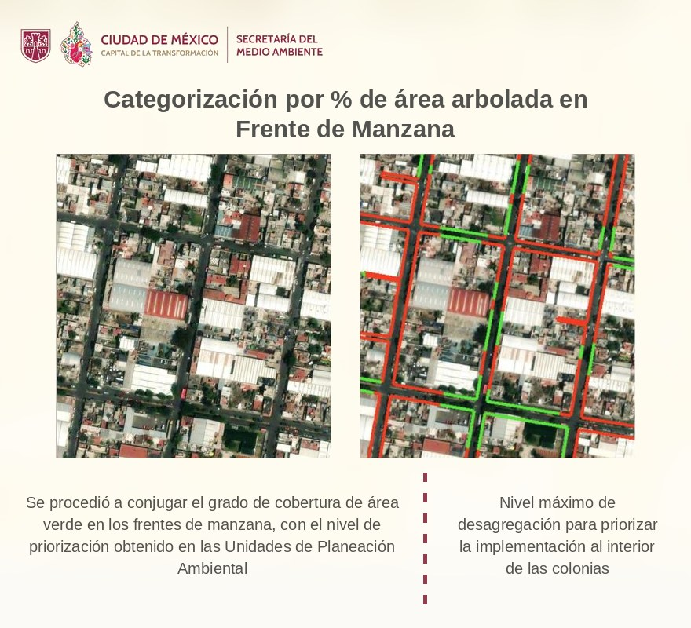

Frentes de manzana que plantan las alcaldías; las vialidades primarias aparecen en gris. Puedes activar las dos.
Mapa de fondo
Prioridad · km de frente de la ciudad
Espacios para plantar · inventario de arbolado
Inventario en curso (corte: septiembre de 2026). Donde no hay puntos puede que aún no se haya inventariado.
Se ven al acercar el mapa a nivel de calle.
Dibujando calles…
Sin mapa base · colonias, frentes de manzana y vialidades primarias
Modelo de priorización de reforestación urbana
La Secretaría del Medio Ambiente pone esta herramienta a disposición de las alcaldías y del Gobierno de la Ciudad. Muestra dónde conviene plantar primero y dónde ya hay espacio para plantar: cepas vacantes, tocones y árboles muertos del inventario de arbolado.
¿Qué quieres consultar?
Calles y colonias de las alcaldías
¿Qué alcaldía quieres revisar?
La herramienta recuerda en este navegador tu última consulta. Puedes cambiar lo que consultas o la alcaldía en cualquier momento.
Ayuda
Cómo usar la herramienta
Te muestra cada parte de la herramienta, paso a paso.
Elige qué consultar. En «Atiende»: calles de las alcaldías, vialidades primarias del Gobierno Central o las dos. Después, la alcaldía o la colonia.
Busca un lugar. Escribe una colonia, calle o avenida, o pega coordenadas o un enlace de Google Maps.
Filtra. «Banqueta» separa las calles con y sin banqueta; «Espacio» deja solo las que tienen cepa vacante, tocón o árbol muerto.
Decide por dónde empezar. En «Dónde empezar», «Mostrar» ordena colonias, calles o avenidas por km prioritarios, cepas vacantes o habitantes.
Revisa y descarga. En el mapa, toca una calle o un espacio para plantar para ver su ficha y abrir Street View. «Resumen» da las cifras y «Descargas», los archivos.
Términos
Prioritario
Prioridad Muy Alta, Alta o Media: donde conviene plantar primero.
Frente de manzana
Cada lado de la calle frente a una manzana; se prioriza por separado.
Tramo
Parte de una calle entre dos esquinas, con su propia prioridad.
Espacio para plantar
Cepa vacante, tocón o árbol muerto del inventario de arbolado (en curso): ahí ya hubo un árbol.
Atiende
Quién planta: la alcaldía (calles y colonias) o el Gobierno de la Ciudad (vialidades primarias).
Metodología: cómo se calculó la prioridad
Metodología · Programa de Reforestación Urbana
Metodología
La prioridad dice dónde conviene plantar primero. Se calcula en dos pasos: primero cada colonia y después cada calle dentro de ella.
1Prioridad de la colonia
Se califican tres cosas, cada una del 1 (menos necesidad) al 5 (más necesidad):
Qué se mide
Fuente
Calificación 1
Calificación 5
Calor: temperatura del suelo de la ciudad
SEDEMA, 2024
Menos de 28.8 °C
Más de 43.1 °C
Rezago social: grado de marginación
CONAPO, 2020
Muy bajo
Muy alto
Sombra: parte del suelo cubierta por copas de árboles
SEDEMA
55.6 % a 100 %
0 % a 12.6 %
Las tres calificaciones se suman y el total da la prioridad de la colonia, de Muy Alta a Muy Baja.
Atender primeroAtender después
Muy Altamás calor, más rezago, menos sombraAltaMediaBajaMuy Bajazonas frescas y arboladas
Las fichas y las descargas muestran además, como contexto, el Índice de Desarrollo Social de EVALÚA CDMX; no entra en el cálculo.
2Prioridad de cada calle
Cada calle se divide en frentes de manzana: cada lado de la calle frente a una manzana (— en la ciudad, según INEGI 2020). Con imágenes de satélite se midió cuánta vegetación tiene cada frente: a menos verde, más prioridad. La prioridad de la calle combina la de su colonia con el verde de su frente.
Calles de las alcaldías: cada tramo es un frente; los dos lados de la calle cuentan por separado (— frentes).
Vialidades primarias: cada tramo va de cruce a cruce y se corta al cambiar de alcaldía (— tramos).
Los kilómetros de una calle son la suma de sus tramos.
Los colores son las cinco clases de prioridad.

Así se clasifica el verdor de cada frente de manzana: en verde los tramos con arbolado y en rojo los que no lo tienen. Es el nivel de detalle con el que se prioriza al interior de las colonias.
3Quién atiende cada calle
Gobierno de la Ciudad: las vialidades primarias y de acceso controlado (ejes viales, calzadas, Circuito Interior, Periférico, Viaducto y avenidas principales): — km, de los que — km son prioritarios (—).
Alcaldías: el resto de las calles: — frentes (— km), de los que — km son prioritarios (—).
Para no contar dos veces, los frentes que dan a una vialidad primaria cuentan para el Gobierno de la Ciudad y no para la alcaldía: — frentes (— km). Un frente da a la avenida si va en su misma dirección (30° o menos de diferencia) y está a 18 m o menos de su línea central, o hasta a 60 m si la calle se llama igual (avenidas anchas, con camellón o laterales).
El — de los kilómetros de vialidad primaria tiene manzanas al lado; el resto son puentes, entronques y vías rápidas. La meta del Gobierno de la Ciudad se mide sobre los — km completos.
Banqueta. Es el dato de INEGI 2020 de cada frente de manzana; por eso el filtro solo aplica a las calles de las alcaldías. En las vialidades primarias, la ficha y el Resumen la dan como referencia.
Espacios para plantar. Vienen del inventario de arbolado de CIGA-UNAM y SEDEMA, que va en curso. Cada cepa vacante, tocón o árbol muerto cuenta para el frente más cercano a 20 m o menos; en las vialidades primarias, también los del camellón a 25 m o menos de la línea central. Una calle sin espacios puede no estar inventariada todavía.
Fundamento. Las alcaldías plantan en las calles secundarias y el Gobierno de la Ciudad en las vialidades primarias y de acceso controlado; no es una atribución nueva.
Ver las disposiciones legales
Ámbito
Disposición
Contenido
Alcaldías
Constitución CDMX, art. 53 B.3 a) fr. XIX y b) fr. XXII
Servicio público de poda; conservación y mejora de parques urbanos y áreas verdes.
Alcaldías
Ley Ambiental CDMX, art. 106
Conservación, mantenimiento, protección, restitución y desarrollo de los árboles de su territorio, en coordinación con la Secretaría; crear áreas verdes cuando no se alcancen 9 m² por habitante, con especies nativas.
Alcaldías
Ley Ambiental, art. 8 fr. IX–X y art. 110
Vigilar el arbolado en vía pública, sustituirlo gradualmente por nativas y prestar el servicio de poda.
Alcaldías
Ley Orgánica de Alcaldías, arts. 50 y 52 fr. VI
Incrementar áreas verdes por habitante; programas de reforestación en vías secundarias.
Secretaría
Ley Ambiental CDMX, art. 7 fr. IV y LI
Expedir las normas ambientales (NADF-001; paleta vegetal obligatoria).
Secretaría
Ley Ambiental, art. 7 fr. VIII y XVII
Resolver, limitar o negar plantación, poda, derribo y trasplante en suelo urbano; promover la sustitución de exóticas por nativas.
Secretaría
Ley Ambiental, art. 7 fr. XXXV y art. 107
Sistema de Información Ambiental e inventario del arbolado urbano, en coordinación con las Alcaldías (reforma del 24 de diciembre de 2025).
Secretaría
Reglamento Interior, art. 190 fr. V, VI y VII
Lineamientos de reforestación; autorizar plantación, poda y trasplante en áreas verdes urbanas; asistencia técnica y capacitación.
Cabildo
Constitución CDMX, art. 54
Órgano de planeación, coordinación, acuerdo y decisión entre el Gobierno de la Ciudad y las Alcaldías.
4Cómo leer los resultados
Empieza por Muy Alta. Muy Alta, Alta y Media son prioritarias; el orden sugiere por dónde empezar.
Sin banqueta no es descartar. Esas calles requieren visita; el dato de INEGI es de 2020 y puede haber cambiado.
Una calle puede tener varias prioridades. Cada tramo tiene la suya; la lista dice la que predomina.
No sumes kilómetros de calles con los de avenidas. Las calles se miden por acera y las avenidas por su línea central; compáralas en la tabla «Alcaldía y Gobierno Central» del Resumen.
Es un diagnóstico, no una meta. Dice dónde conviene plantar, no cuántos árboles caben: el espacio, los cables y las instalaciones se revisan en sitio. Las especies nativas, el riego y el mantenimiento se acuerdan con la Secretaría.
Fuentes: INEGI, Características del Entorno Urbano 2020; CONAPO, Índice de marginación urbana 2020; EVALÚA CDMX, Índice de Desarrollo Social por unidad territorial; SEDEMA, temperatura superficial urbana 2024 y cobertura de copa; Sistema de Información Ambiental, modelo de priorización de frentes de manzana (nov. 2025); SEDEMA, capa de vialidades primarias priorizadas para reforestación (ago. 2026); CIGA-UNAM y SEDEMA, inventario de arbolado urbano (en curso).